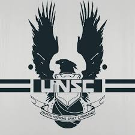
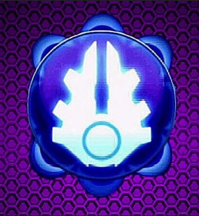
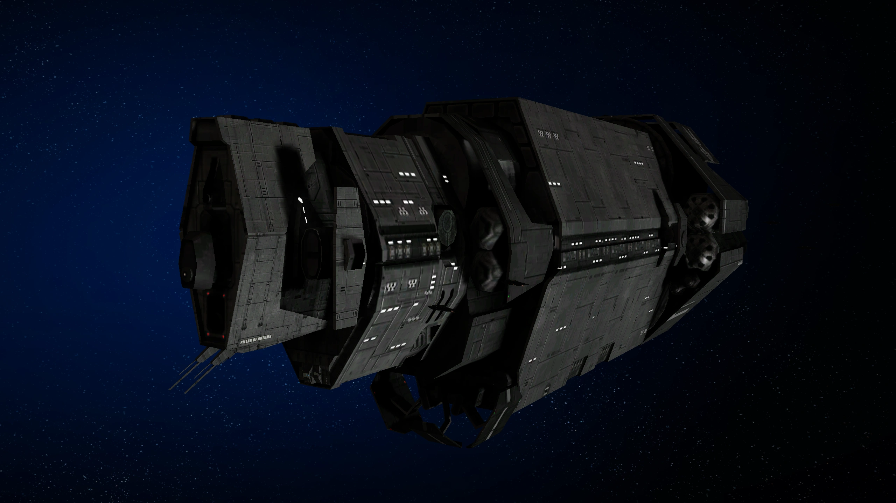
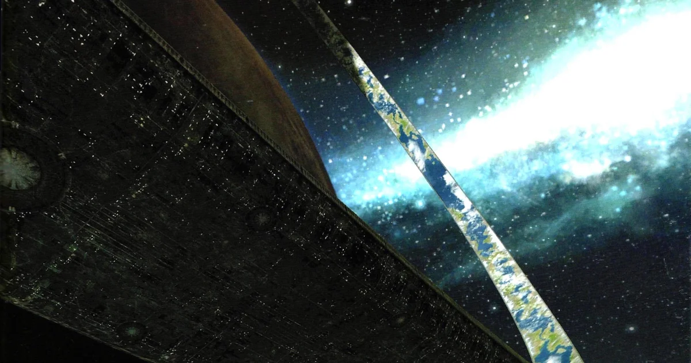

Mergi inapoi.
Aceasta pagina contine povestea jocului:
Jocul are loc în secolul al XXVI-lea, într-un univers science-fiction unde omenirea, sub conducerea
organizației militare UNSC (United Nations Space Command),este într-un război de supraviețuire împotriva
unei alianțe religioase extraterestre numită Covenant.


Războiul dintre Covenant și oameni a ajuns la un punct critic. După ce Covenant descoperă
planeta Reach, o bază strategică a UNSC, o atacă și o distrug. Supraviețuitorii, inclusiv
nava Pillar of Autumn comandată de căpitanul Jacob Keyes, fug și activează coordonate
aleatorii pentru a scăpa de urmăritori. Nava ajunge într-un sector necunoscut al
galaxiei, unde descoperă un obiect misterios: un inel artificial masiv, numit Halo.


Priml cutscene al jocului.(filmuletul de introducere)
Jocul este impartit in 10 nivele:
- The Pillar of Autumn
- Halo
- Truth and Reconciliation
- The Silent Cartographer
- Assault on the Control Room
- 343 Guilty Spark
- The Library
- Two Betrayals
- Keyes
- The Maw